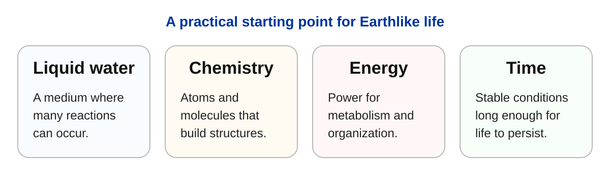

1. Universe of Life#
Jun 07, 2026 | 9212 words | 46 min read
How to use this chapter
This chapter introduces the search for life beyond Earth as a scientific question. As you read, focus on three ideas: life is harder to define than it first appears, habitability is not the same as inhabitation, and scientific claims require evidence rather than imagination.
1.1. Why the Search for Life Matters#
The search for life in the universe matters because it could provide an answer to the question: “Are we alone?” This question is central to our understanding of our identity as a species. From our more humble origins, humanity has spread and colonized the Earth in only \({\sim}20{,}000\) years. In that process, we encountered new environments, new species, and new ways of looking at the world itself. Through this journey, it was not long before we shifted our gaze from the path ahead to the sky and wondered whether Earth was the only world with life.
This chapter begins with that familiar question, but it does not treat the question as science fiction. Instead, we will use it to introduce a scientific way of thinking. The goal is not to assume that aliens exist. The goal is to ask what kinds of life could exist beyond Earth, where we might search for that life, and what kind of evidence would count as a real discovery.
1.1.1. Cultural ideas of aliens#
When we search for the possibility of life beyond the Earth, we do not have to look very far. Over the past century, our collective culture (in the West) has drunk from the well of science fiction and its vision for aliens. As a result, we find that aliens are everywhere!
You only need to check the internet, your social media account, or the latest movies to find evidence of aliens. Some of us build identities around which Star Trek captain is the best (i.e., Kirk or Picard; see Weird Al’s White and Nerdy), even though they are both works of fiction. By the way, Captain Kirk is the quintessential captain because he has his opposite, Spock, along for the ride for his adventures. Space exploration (and drama) in the Federation is a place for us to simulate our current problems and how we might solve them in the future (just like why we dream).
Others may prefer the Star Wars universe, which is really a space soap opera on the scale of a whole Galaxy. In the United States, each generation has been introduced to a new vision for Star Wars and the one you grew up in was always the best.

Fig. 1.1 Star Wars: A New Hope presents space as a setting for adventure, conflict, and imagined civilizations. It is useful here because it shows how familiar alien worlds have become in popular culture, even though popular culture is not scientific evidence. Image credit: theatrical release poster by Tom Jung for Star Wars (1977), via Wikipedia. Poster art copyright belongs to Lucasfilm Ltd. or the original rights holder; non-free image used here for educational commentary.#

Fig. 1.2 Star Trek: The Motion Picture presents space as a setting for exploration, contact, diplomacy, and mystery. Together, Star Wars and Star Trek show how science fiction shaped expectations about life beyond Earth before students encounter the slower, evidence-based scientific search. Image credit: theatrical release poster by Bob Peak for Star Trek: The Motion Picture (1979), via Wikipedia. Poster art copyright belongs to Paramount Pictures or the original rights holder; non-free image used here for educational commentary.#
Popular culture makes extraterrestrial life feel familiar, but familiarity is not evidence. The scientific search begins when we ask what observations would actually support the claim that life exists beyond Earth.
Many other films simulate what might happen when we finally make “contact” with aliens or what happens when we find out that contact has already been made. H. G. Wells tells a story about how the inhabitants of the red planet, Mars, became so envious of the blue Earth that they launch an invasion (i.e., a preemptive strike). After much confusion, it was the simplest of organisms that come to humanity’s rescue to defeat the Martians.
This is basically the plot to the 1990s blockbuster: Independence Day. Instead of Martians, it is other aliens that come to take our world for its resources, where humanity is saved instead by a computer virus. Another 1990s film, Men in Black provides a look into how we might have to fight off an alien invader within a much more cosmopolitan framework. This is even more “down to Earth” with aliens just slipped in and it continues with tales of UFOs (and Area 51).

Fig. 1.3 The 1953 film The War of the Worlds presents extraterrestrial life through invasion and fear. This shows how alien stories often project human anxieties onto the universe. Image credit: Wikimedia Commons, theatrical poster for The War of the Worlds (1953), public domain in the United States.#
Overall, we tell stories to project our own history into a science fiction context. During the Spanish conquest, there was a Spanish sailor, Gonzalo Guerrero, who was shipwrecked along the Yucatan peninsula. Guerrero was taken captive by one of the Mayan militias in the area and was forced into slavery. Note that this fate could be considered better than his shipmates that became sacrifices.
Guerrero learned the customs of his Mayan captors, as well as their language. He becomes a warrior for his Mayan clan, where his battle prowess earns him a military rank, which allows him to become a part of the people and take a wife. As a result, Guerrero’s children become the first mestizos, or mixed children between the Spaniards and the Maya.
Checkpoint
Why is a science-fiction story about aliens not the same thing as scientific evidence for life beyond Earth?
Some of the arriving Spaniards (including Cortés) hear about Guerrero’s survival and capture. They sought to free him from his captivity, but soon find that he does not fight for Spain but for his clan. If this story sounds familiar, especially the last part, that’s because it forms the plot of Avatar.
1.1.2. The allure of aliens#
The popularity of alien stories is not just about entertainment. The idea of extraterrestrial life touches a much deeper question: are we alone? That question is powerful because it connects science to meaning, identity, and imagination. If life exists elsewhere, then Earth is not the only living world. If intelligent life exists elsewhere, then humanity is not the only technological species. Either possibility would change how we understand our place in the universe.
This is also why we have to be careful. Because the question is emotionally powerful, people are often tempted to interpret unusual events as evidence for aliens before the evidence is strong enough. Strange lights in the sky, unusual rocks from space, unexplained signals, or gaps in our knowledge can all become places where people project the answer they want to be true.
David Kipping’s discussion is useful here because it treats aliens as both a scientific question and a human temptation. The search for life is exciting because the answer matters, but excitement is not evidence. As you watch, focus on the difference between wanting an explanation to be true and having enough evidence to accept it scientifically.
1.1.3. Science fiction versus scientific evidence#
Science fiction is useful because it gives us a way to imagine possibilities. It lets us ask questions about exploration, fear, cooperation, invasion, survival, and what it means to be human. However, science fiction is not the same thing as scientific evidence. A movie can begin with the assumption that aliens exist and then build a story around that assumption. Science cannot do that. Science begins with observations, tests, and evidence that can be checked by other people.
This distinction matters because people imagined life beyond Earth long before there was a scientific way to search for it. Earlier “searches” for life on other worlds were often speculative. It has always been possible to imagine life elsewhere, but imagination by itself is not a scientific process. Before spacecraft explored the planets, people could fill gaps in our knowledge with stories. Venus, for example, was sometimes imagined as a world that might support exotic life because its thick clouds hid the surface. Since no one could see the ground, it was easy to imagine jungles, oceans, or even civilizations beneath the clouds.
Mars produced a similar problem. Early telescope observations suggested long, thin markings on the Martian surface. These markings were later associated with “canals,” partly because of translation and interpretation. The word suggested artificial structures, which encouraged the idea that intelligent Martians had built a planet-wide engineering system. Better observations eventually showed that this interpretation was wrong. Mars is an interesting world, but not because it has visible canals built by a civilization.

Fig. 1.4 Giovanni Schiaparelli’s maps of Mars show the linear features he called canali, an Italian word better translated as “channels.” In English, these were often discussed as “canals,” which encouraged speculation that intelligent Martians had built artificial waterways. This is a useful historical example of how limited observations, translation, and interpretation can shape public ideas about life beyond Earth. Image credit: Giovanni Schiaparelli Mars maps, public domain via Wikimedia Commons.#

Fig. 1.5 Spacecraft observations replaced canal speculation with direct evidence. Mars is a real geological world with craters, volcanoes, canyons, dust, ice, and a complex history, but no evidence of a technological civilization. Image credit: NASA/JPL-Caltech/USGS Viking Orbiter mosaic of Mars, NASA media.#
Early ideas about Martian civilizations came from limited observations, while modern Mars science comes from telescopes, spacecraft, landers, and rovers.
This comparison shows why astrobiology depends on evidence. Earlier ideas about Martian civilizations came from limited observations, while modern Mars science comes from telescopes, spacecraft, landers, and rovers. These examples show why better evidence matters. When the evidence is weak, people often project their own hopes, fears, and stories onto distant worlds. Venus became a hidden tropical world. Mars became a dying planet with desperate engineers. These ideas were imaginative, but they were not strongly supported by evidence. As telescopes improved and spacecraft began visiting planets directly, many of these older ideas were replaced by a clearer scientific picture.
Current telescopic observations and spacecraft images give us no evidence for civilizations elsewhere in the Solar System. In that sense, we appear to be alone locally: there are no Martian cities, no visible alien structures, and no obvious technological societies on nearby planets or moons. This does not mean the search for extraterrestrial life is over. It means the most realistic nearby targets are not civilizations like those in science fiction. They are simpler forms of life, especially microbial life, that might exist now or might have existed in the past.
Checkpoint
What would make a claim about aliens scientific rather than just interesting or imaginative?
That shift is important. The scientific search for life beyond Earth is not mainly a search for aliens with spaceships. It is a search for evidence that life can arise, survive, or leave traces in environments beyond Earth. Mars may preserve evidence of ancient microbial life. Icy moons such as Europa may have subsurface oceans where simple life could possibly survive. These possibilities are less dramatic than science fiction, but they are scientifically testable.
There is another reason the modern search is different: our technology has changed. For most of human history, we did not even know whether planets existed around other stars. Today, we know that exoplanets are common. This changes the question from “Are there any other planets?” to “What kinds of planets are out there, and could any of them support life?” Improved telescopes, spacecraft, computer models, and laboratory experiments have turned the search for life into a real scientific field. The Kepler Space Telescope changed the search for life by turning exoplanets from rare discoveries into a population that astronomers could study statistically.

Fig. 1.6 Kepler changed exoplanet science from a collection of individual discoveries into a population study. The left panel shows non-Kepler exoplanet discoveries plotted by planet mass and orbital period. The right panel converts mass to approximate radius and adds the Kepler planet candidates in yellow, revealing a large population of smaller planets that had been difficult to find before Kepler. Image credit: Natalie M. Batalha/PNAS.#
The strongest reason to search is simple: we will not know unless we look. We should not assume that life is common just because the universe is large. We should also not assume that Earth is unique just because we have not yet found life elsewhere. The scientific approach is to identify promising places, make careful observations, and follow the evidence wherever it leads.
1.1.4. Why the question is worth asking#
The question is worth asking because the possible answers are important either way. If life exists beyond Earth, then life is not a one-time accident limited to our planet. That would change how we understand biology, planetary science, and our place in the universe. Even if that life were only microbial, it would show that life can begin or survive in more than one location.
If we search carefully and find no life elsewhere, that result would also matter. It would suggest that Earth may be unusually rare, or that life requires a very specific chain of events. A null result is not a failure if it helps narrow the possibilities. In science, learning where life is not found can be almost as important as learning where it is found.
For now, the honest answer is that we do not know. We have no confirmed evidence of life beyond Earth. At the same time, we have strong reasons to keep searching. The Solar System contains worlds with ice, oceans, organic molecules, and complex geology. Beyond the Solar System, we now know that planets are common around other stars. The question is no longer whether it is reasonable to imagine other worlds. The question is whether any of those worlds have the right conditions for life, and whether we can recognize life if we find it.
1.2. What Do We Mean by Life?#
Before we can search for life beyond Earth, we have to ask what we mean by life. This sounds simple at first, but it quickly becomes difficult. We recognize familiar living things easily: a person, a tree, a mushroom, a beetle, or a bacterium. However, those examples are very different from one another. A human can think and move. A tree stays rooted in place. A mushroom is neither a plant nor an animal. A bacterium is too small to see without a microscope. All of them are alive, but no single everyday feature describes them perfectly.
This is one reason the search for extraterrestrial life is difficult. We are not only asking whether something exists beyond Earth. We are also asking what signs would convince us that something is alive. That is much harder than simply looking for creatures that resemble plants, animals, or people.
Searching for life in the universe is a very different question than searching for aliens or “little green men.” We must consider many possible candidates, including intelligent life, plants and animals, fungi, bacteria, and forms of life we may not have imagined. Any life that we find beyond the Earth is called extraterrestrial life or ET. It is not just a blockbuster from the 1980s, but a real category that we have to work with. In this course, ET life does not automatically mean a technological civilization. It means life beyond Earth in any form.

Fig. 1.7 Microbial life is still life. If scientists discover life beyond Earth, it may be much more likely to resemble simple microorganisms than animals, plants, or technological civilizations. This is why astrobiology often focuses on chemical and microscopic evidence rather than visible creatures. Image credit: CDC/Evangeline Sowers and Janice Carr, via Wikimedia Commons, public domain.#
1.2.1. An expert view: life as a set of connected ideas#
The difficulty of defining life is not just a classroom problem. Biologists also struggle with it. One reason is that life is not a single feature. Life is a connected system of structure, chemistry, information, reproduction, and evolution. A living thing is not alive simply because it moves, grows, or copies itself. It is alive because these processes work together in an organized way.
Paul Nurse approaches life by looking for the major ideas that make biology work. As you watch, pay attention to how he avoids a simple dictionary definition. Instead, he describes life through connected principles: cells, genes, evolution, chemistry, and information.
This helps us refine the question we are asking in astrobiology. If we search for life beyond Earth, we are not only looking for something that moves or grows. We are looking for a system that uses chemistry, stores information, maintains organization, and can change over generations. That is why life is both a chemical process and a historical process. It operates in the present, but it also carries information from the past into the future.
1.2.2. Why life is hard to define#
Life is hard to define because living things share many features, but no simple feature works by itself. Living things
use energy,
interact with their environment,
contain complex chemistry, and
reproduce with variation over time.
Many living things also grow, respond to their surroundings, and maintain internal conditions that allow them to function. However, if we turn any one of these traits into a simple definition, we run into problems.
Life on Earth is built from complex chemistry involving carbon, water, and many large molecules. That gives us a practical starting point, but it may not describe every possible form of life in the universe. At the same time, we should not make the definition so broad that almost anything counts as alive. A useful definition of life has to be broad enough to include unfamiliar organisms, but narrow enough to exclude things that only imitate one or two features of life.
This is why scientists often talk about the characteristics of life rather than one perfect definition. In astrobiology, the goal is usually not to win an argument over wording. The goal is to decide what evidence would make life the best explanation.

Fig. 1.8 Life on Earth includes organisms that look very different from one another, from bacteria to fungi, plants, and animals. A tree of life helps show why defining life with one simple trait is difficult: known life is diverse, but it is still connected by shared ancestry and biology. Image credit: Wikimedia Commons, phylogenetic tree of life by Sting and contributors, public domain.#
1.2.3. Movement, growth, and reproduction are not enough#
Some common signs of life are not enough on their own. Movement is a good example. Animals move, many microorganisms move, and even some plants move slowly by growing toward light. But movement by itself does not mean something is alive. Clouds move through the atmosphere. Rivers move downhill. Fire moves as it spreads across fuel. None of these are alive.
Growth also fails as a simple definition. Living organisms grow, but so do crystals, mountains, and storms. A crystal can become larger as more material is added to its structure, but that does not mean it is alive. A mountain can grow as geological forces push rock upward, but that growth is not biological.
Reproduction is also not enough by itself. Reproduction is central to life as we know it, but some nonliving processes can spread in ways that resemble reproduction. Fire can spread from one object to another if fuel and oxygen are available. A computer virus can copy itself through a network. These examples show why scientists have to be careful. A convincing case for life usually requires several lines of evidence working together, not one simple feature.
1.2.4. Why we often search for Earthlike life first#
Because life is difficult to define in a completely general way, scientists often begin by searching for Earthlike life. This does not mean that life elsewhere must look like life on Earth. It also does not mean that scientists lack imagination. It means that Earth is the only confirmed example of life we have. If we want to search scientifically, it makes sense to begin with the one example that is known to exist.

Fig. 1.9 Earth is the only world where life is confirmed to exist. For that reason, the search for life beyond Earth usually begins with Earthlike requirements: liquid water, useful chemistry, energy, and enough time for life to arise or survive. Image credit: NASA Earth Observatory, Blue Marble imagery by NASA Goddard Space Flight Center/Reto Stöckli, with enhancements by Robert Simmon; NASA media.#
Earthlike life depends on chemistry, energy, and liquid water. These are not random choices. Water is important because it can dissolve many substances and allow chemical reactions to occur. Energy is needed because life must do work: building molecules, repairing structures, moving materials, and maintaining internal organization. Chemistry matters because life is not just a shape or a behavior. It is a functioning chemical system.
Searching for Earthlike life is therefore a practical first step. It gives scientists a clear set of targets: worlds with liquid water, useful chemical ingredients, and sources of energy. If we eventually find evidence for a very different kind of life, then our understanding will expand. But the most reasonable place to begin is with the kind of life we already know is possible.

Fig. 1.10 Searching for Earthlike life gives scientists a practical starting point. The goal is not to assume that all life must look like life on Earth, but to begin with the only example that is known to work. Figure created for these course notes. Concept based on NASA Europa Clipper’s summary of key ingredients for life: liquid water, chemistry, energy, and time.#
1.3. The Scientific Context#
The search for life in the universe is not part of just one science. It depends on astronomy, planetary science, chemistry, geology, biology, physics, mathematics, and computer science. Each field answers a different part of the same larger question. Astronomy tells us where worlds are located and how common they might be. Planetary science tells us what those worlds are like. Biology helps us understand what life requires and how flexible life can be.
This interdisciplinary nature is one reason astrobiology is both exciting and challenging. No single observation answers everything. A planet might be the right size, but have the wrong atmosphere. A moon might have liquid water, but that water might be buried beneath kilometers of ice. A world might contain organic molecules, but organic molecules alone do not prove that life exists. The search requires many kinds of evidence.
At first, mathematics and computer science may appear unrelated to the search for life. However, math gives scientists a way to describe physical relationships, and computer science gives scientists a way to use those relationships many times. Astronomy is one piece of the search, but it works best when it is combined with planetary science and biology. Together, these fields create the scientific context for asking whether life might exist beyond Earth.
1.3.1. Astronomy: where planets fit in the universe#
Astronomy gives the search for life its largest context. For much of human history, people imagined Earth as the center of the universe. In that view, the stars were not distant suns with possible planets of their own. They were lights in the sky, often treated as fixed points, symbols, or divine objects. The planets were sometimes associated with gods, and the stars were often imagined to lie at a uniform distance from us. If Earth was the center of everything, then it was natural to imagine life as something centered on Earth as well. This Earth-centered, or geocentric, view dominated human thinking for thousands of years.

Fig. 1.11 In the geocentric view, Earth was placed near the center of the cosmos. This historical model is useful because it shows how natural it once seemed to imagine Earth, and therefore life, as central. Image credit: Andreas Cellarius, Ptolemaic system, from Harmonia Macrocosmica, public domain via Wikimedia Commons.#

Fig. 1.12 The heliocentric view moved Earth from the center of the cosmos to the position of one planet orbiting the Sun. That shift is central to astrobiology because it makes Earth one world among many possible worlds. Image credit: Andreas Cellarius, Copernican system, from Harmonia Macrocosmica, public domain via Wikimedia Commons.#
The shift from an Earth-centered cosmos to a Sun-centered planetary system was more than a change in astronomy. It changed how humans understood Earth’s place in the universe.
Modern astronomy changed that picture. Earth is a planet orbiting the Sun. The Sun is a star. The stars we see at night are other suns, located at enormous distances. This change in perspective matters for astrobiology because it turns the search for life from a local question into a cosmic one. If the Sun is one star among many, then other stars may also have planets. If other stars have planets, then some of those planets might have environments where life could exist.
Astronomy also shows that the same physical laws operate on Earth and in space. Gravity explains falling objects near Earth, but it also explains the motion of planets, moons, stars, and galaxies. In fact, part of the power of Newton’s law of gravity came from showing that one rule could connect motion on Earth with motion in the heavens. Light behaves according to the same rules whether it comes from a lamp in a room or a star across the Galaxy. This is important because it means we can study distant worlds using physical laws that work everywhere.
Astronomy operates on many scales. It connects everyday observations, such as objects falling near Earth’s surface, to planetary orbits, star systems, galaxies, and the universe as a whole. We cannot visit most of these places directly, but we can still learn about them through light, motion, and mathematical models.
This is where mathematics and computer science become part of the story. In a math class, students often begin with simple relationships such as the equation of a line, \(y = mx + b\). This equation says that if we choose an input value \(x\), then the equation gives us an output value \(y\). In computer science, this same idea appears as a function. A function takes an input, follows a set of instructions, and returns an output.
A simple analogy is a soda machine. The input is the money or card payment. The machine performs the internal steps: it checks the payment, connects the selection to a product, and releases the item. The output is the soda. The person using the machine does not need to see every step inside the machine to understand the basic input-output relationship.
A mathematical function works in a similar way. If we give the function an input, it gives us an output. For the equation of a line, the input might be \(x\) and the output might be \(y\). For astronomy, the input might be the masses of two objects and the distance between them, and the output might be the strength of gravity between them.
One of the most important examples is Newton’s law of gravity:
This equation describes how strongly two objects attract each other. The input values are the mass of the first object \(M\), the mass of the second object \(m\), and the distance \(r\) between them. The symbol \(G\) is a constant, which means it has the same value every time the equation is used. The output is the gravitational force \(F_g\).
Computer science becomes powerful because a computer can use this kind of relationship over and over again. A person can calculate the gravitational force between the Sun and Earth once. A computer can calculate the gravitational forces between the Sun, planets, moons, asteroids, and spacecraft many times per second. After each calculation, the computer updates the positions of the objects, then calculates the forces again, then updates the positions again. Repeating this process allows the computer to build a simulation of planetary motion.
This is sometimes called a brute-force approach. Instead of solving one perfect equation for the entire future of the Solar System, the computer takes many small steps. At each step, it uses the same basic physical rule: gravity depends on mass and distance. With enough small steps, the computer can reproduce the curved paths of planets around the Sun.

Fig. 1.13 Orrery showing the motions of the inner four planets of our Solar System. The animation makes orbital motion visible as a repeated pattern rather than a single static diagram. Image credit: Wikimedia Commons.#

Fig. 1.14 Orrery showing the motions of the outer four planets of our Solar System. The longer orbital periods make clear why computers are useful: they can repeat the same physical rules over many small time steps. Image credit: Wikimedia Commons.#
Computer simulations do not need a new law at every moment. They repeatedly apply the same physical relationships, update the positions, and then repeat the process.
This matters for the search for life because astronomy often deals with systems that are too large, too far away, or too slow to study directly. We cannot watch an entire planetary system form from beginning to end. We cannot travel to most exoplanets. We cannot move planets around to see what would happen. But we can use mathematics and computer models to test possibilities. We can ask whether planets can form around certain kinds of stars, whether their orbits remain stable, and whether some planets might stay in environments where liquid water could exist.
In this course, the math and Python examples will usually work like a simple calculator. The goal is not to become a programmer. The goal is to see how a scientific idea can be written as a relationship, how that relationship can be treated as a function, and how a computer can use that function repeatedly to help us understand the universe.
1.3.2. Planetary science: how planets differ#
Planetary science also helps us understand how common planets may be. Asteroids and comets preserve clues about planet formation, so they help scientists study how planetary systems formed. Modern planetary science is still a relatively young and growing discipline, with much of its foundation built from studying our own Solar System over the past \({\sim}60\) years.
The discovery of planets around other stars made this context much larger. One early planet outside the Solar System was reported in 1989, but the available technology made the detection difficult to interpret. Planets around a pulsar were detected in 1992, although pulsars are not Sunlike stars and are not the first place we would expect familiar life. The 1995 detection of a planet around 51 Pegasi was especially important because it showed that planets could be found around stars more like the Sun. A planet outside our Solar System is called an exoplanet.
One major lesson from planetary science is that planets can be very different from one another. Venus, Earth, and Mars are all rocky planets, but their histories are not the same. Venus is extremely hot because of its thick atmosphere and powerful greenhouse effect. Mars is cold and dry today, even though it shows evidence that liquid water existed on its surface in the past. Earth has long-lasting surface oceans, active geology, and an atmosphere that supports complex life. Comparative planetology uses these similarities and differences to understand why worlds evolve in different ways.

Fig. 1.15 Mercury, Venus, Earth, and Mars are all terrestrial planets, but similar category does not mean similar habitability. Venus, Earth, and Mars are especially useful for comparative planetology because they show how rocky worlds can follow very different evolutionary paths. Image credit: Wikimedia Commons, approximate terrestrial planet size comparison, NASA-derived media.#
These comparisons help scientists avoid overly simple thinking. A planet being “Earth-sized” does not automatically make it Earthlike. A planet being rocky does not guarantee habitability. A planet being in the right general location around its star does not guarantee that it has liquid water on the surface. Planetary science helps us ask better questions: What is the atmosphere made of? Is water present? Is there a source of energy? Has the planet remained stable long enough for life to arise or survive?
Habitability means that the ingredients and conditions for life are present. It does not guarantee that life exists. A habitable world could support life in principle, but it might still be uninhabited. It could also support only microbial life, which dominated most of Earth’s own history. Astronomy suggests that many stars have planets, and planetary science suggests that at least some of those planets or moons may have environments worth investigating.
1.3.3. Biology: what life requires and what extreme life teaches us#
Biology gives the search for life its most important example: life on Earth. Every known living thing comes from Earth, so Earth life is our starting point. Biology tells us that life depends on complex chemistry, uses energy, and functions within an environment. It also shows us that life can survive in places that once seemed too harsh.
The search for life also assumes that the laws of chemistry are universal. Distant stars contain the same chemical elements found on Earth, and interstellar gas clouds contain organic molecules, including amino acids that are building blocks associated with life. This does not mean that life is present in those clouds. It means that some of the chemistry connected to life is not unique to Earth.
Scientists also ask whether biological processes might be universal. Laboratory experiments can reproduce some chemicals related to early Earth conditions, which suggests that parts of prebiotic chemistry can occur naturally. However, the presence of organic material does not mean life exists. Life is not only a collection of ingredients. It is also a functioning system that uses energy, maintains organization, and responds to its environment.
This matters because the range of habitable environments may be broader than people once assumed. Some organisms live in extremely hot water near deep-sea volcanic vents. Others survive beneath ice sheets near Antarctica’s coast. Some live inside rocks buried about \(1\ {\rm km}\) beneath Earth’s surface. These organisms are often called extremophiles because they live in conditions that are extreme from a human point of view.

Fig. 1.16 Profuse venting at the Beebe Vent Field shows why hydrothermal vents are called “black smokers.” Hot, mineral-rich fluids mix with cold seawater, producing dark particle-rich plumes. This kind of environment matters for astrobiology because it shows that life can be connected to chemical energy rather than sunlight. Image credit: Wünderbrot, via Wikimedia Commons, licensed under CC BY-SA 4.0.#
Extremophiles are important for astrobiology because they change the way we think about habitability. A world does not need to be comfortable for humans to be interesting for life. It may not need forests, oceans at the surface, or breathable air. A dark ocean beneath an icy crust could still be worth studying if it has liquid water, useful chemistry, and an energy source. Organisms that survive in extreme environments on Earth make worlds such as Europa more interesting, because Europa may have a liquid-water ocean beneath its icy surface.
Biology therefore leaves us with a cautious but hopeful idea. The right conditions for life may be broader than we once thought. There is no reason to assume life must be rare, and there are several reasons to think it could be common. But hope is not evidence. Astrobiology has to test those possibilities with observations, experiments, and careful reasoning.
1.4. Where Should We Search?#
The search for life beyond Earth begins with nearby worlds and then extends outward to planets around other stars. The Solar System is the easiest place to investigate directly because spacecraft can visit planets, moons, dwarf planets, asteroids, and comets. Even so, “nearby” is relative. These worlds are still far away, difficult to reach, and expensive to explore.
Try the numbers: light travel time to Mars
Even nearby worlds are far away. Astronomers often measure distances within the Solar System using the astronomical unit, or AU. One AU is the average distance between Earth and the Sun.
Light takes about \(8.2\ {\rm min}\) to travel \(1\ {\rm AU}\). When Mars is relatively close to Earth, it can be about \(0.52\ {\rm AU}\) away. We can estimate the light travel time using a simple proportional relationship:
So even when Mars is relatively close, light takes a few minutes to travel between Mars and Earth. This is why spacecraft communication is not instantaneous.
# Distance from Earth to Mars during a favorable opposition, in astronomical units
distance_au = 0.52
# Light travel time for 1 astronomical unit, in minutes
light_time_per_au_min = 8.2
# Calculate the light travel time in minutes
light_time_min = distance_au * light_time_per_au_min
print(f"When Mars is {distance_au:.2f} AU away, light takes about {light_time_min:.1f} minutes to travel between Mars and Earth.")
When Mars is 0.52 AU away, light takes about 4.3 minutes to travel between Mars and Earth.
The Solar System gives us plenty of real estate to search, but Earth is still very different from the other planets. Earth has long-lasting surface liquid water in its oceans, and water is crucial to all terrestrial life. Because every known living thing depends on water, worlds with water become especially important targets.
Beyond the Solar System, the number of possible worlds becomes much larger. Many stars have planets, and some of those planets may be rocky worlds in environments where liquid water could exist. The difficulty is distance. Exoplanets are so far away that we usually cannot study them directly as places. Instead, we study them through indirect evidence such as their effects on starlight.

Fig. 1.17 Jezero Crater once held a lake and river delta, making it an important place to search for evidence of ancient habitable environments on Mars. The green colors highlight clay-like minerals associated with water, which can help preserve organic material. Image credit: NASA/JPL-Caltech/MSSS/JHU-APL/Brown University, via Wikimedia Commons, NASA media.#

{kind=link}
{kind=link}
.jpg){kind=link}
{kind=link}
.jpg){kind=link}
{kind=link}
{kind=link}
{kind=link}
{kind=link}
{kind=link}
{kind=link}
{kind=link}
{kind=link}
{kind=link}

Fig. 1.19 Titan is chemically interesting because it has a thick atmosphere and surface lakes, but the lakes are made mostly of hydrocarbons such as methane and ethane rather than liquid water. This makes Titan a natural laboratory for complex organic chemistry. Image credit: NASA/JPL-Caltech/ASI, via Wikimedia Commons, NASA media.#
{kind=link}
Mars, Europa, and Titan show three different ways a world can be interesting for astrobiology: ancient surface water, hidden subsurface water, and complex organic chemistry.
1.4.1. Mars#
Mars is one of the most important targets in the search for life because it is nearby, rocky, and shows strong evidence of a wetter past. Today, Mars is cold and dry at the surface. Its atmosphere is thin, and liquid water is not stable across most of the planet’s surface. However, spacecraft observations show dried river valleys, minerals that form in water, ancient lakebeds, and water ice. Mars also still has subsurface ice.
This makes Mars a natural place to search for evidence of past life. If Mars once had flowing water at the surface, then it may once have had environments that were more favorable for microbial life. The main question is not whether Mars had cities or forests. It almost certainly did not. The more realistic question is whether simple life ever appeared there, and whether traces of that life could still be preserved in rocks or underground environments.
Checkpoint
Why is Mars mainly a search for possible past microbial life rather than cities or civilizations?
Mars is also important because it teaches us how habitability can change. A planet may have conditions suitable for life during one part of its history and lose those conditions later. Understanding Mars helps scientists understand the difference between a planet that is habitable now and a planet that may have been habitable in the past.
1.4.2. Europa, Ganymede, Callisto#
Some of the most interesting places to search for life are not planets at all. Europa, Ganymede, and Callisto are moons of Jupiter, and each may have liquid water beneath an icy outer layer. Europa is especially important because evidence suggests that it hides a deep ocean of liquid water beneath its ice crust.
At first, an icy moon far from the Sun might seem like a poor place to search for life. The surface is cold, and sunlight is weak. However, habitability is not only about sunlight. If liquid water exists beneath the surface, and if there are chemical nutrients and sources of energy, then such an ocean could be a possible habitat for microbial life.
Europa is often treated as one of the strongest candidates for life in the Solar System because it may combine water, chemistry, and internal energy. Ganymede and Callisto are also interesting, although the evidence for habitable oceans is weaker and less direct. These moons show why planetary science is so important: a world can be cold and icy on the outside but still potentially interesting beneath the surface.
1.4.4. Titan#
Titan, Saturn’s largest moon, is interesting for a different reason. It has a thick atmosphere and lakes on its surface, but those lakes are not made of water. They are made mostly of liquid methane and ethane. This makes Titan very different from Earth and from the icy ocean worlds like Europa.
Titan is probably not the most Earthlike place to search for life, but it is one of the best places to study complex organic chemistry. Its atmosphere and surface contain carbon-rich molecules, and its environment shows that chemistry can become complicated even in very cold conditions.
Checkpoint
Why is Titan interesting even though its surface lakes are not made of liquid water?
Titan helps scientists think more broadly. If life requires liquid water, then Titan’s surface may not be a likely habitat. However, if there are subsurface water environments or if life can use chemistry very different from Earth life, then Titan becomes even more interesting. At minimum, Titan is a natural laboratory for studying the kinds of chemistry that may be related to the origin of life.
1.4.5. Exoplanets#
Exoplanets are planets that orbit stars beyond the Sun. They are central to the search for life because they greatly expand the number of possible worlds. The Solar System contains only a small number of planets and large moons, but the Galaxy contains enormous numbers of stars. If many of those stars have planets, then the possible locations for life increase dramatically.
The challenge is that exoplanets are extremely far away. Sending spacecraft to them is not practical with current technology. A spacecraft journey to even a nearby star would take more than \(100{,}000\) years using ordinary spacecraft speeds. Because of this, the search for life on exoplanets is mostly indirect.
Try the numbers: travel time to a nearby star
The nearest star system, Alpha Centauri, is about \(4.24\ {\rm light\ years}\) away. One light-year is about \(63{,}241\ {\rm AU}\), so the distance to Alpha Centauri is
A fast spacecraft traveling at about \(12\ {\rm km/s}\) covers roughly \(2.5\ {\rm AU}\) per year. Using \(t = d/v\), the travel time is
So a spacecraft traveling at ordinary spacecraft speeds would take about \(1.1 \times 10^5\) years to reach even one of the nearest star systems. This is why the search for life on exoplanets depends mostly on telescopes rather than spacecraft visits.
# Distance to Alpha Centauri in light-years
distance_ly = 4.24
# Number of astronomical units in one light-year
au_per_light_year = 63241
# Example spacecraft speed in astronomical units per year
spacecraft_speed_au_per_year = 2.5
# Convert the distance to astronomical units
distance_au = distance_ly * au_per_light_year
# Calculate the travel time in years
travel_time_years = distance_au / spacecraft_speed_au_per_year
print(f"Alpha Centauri is about {distance_au:.2e} AU away.")
print(f"At {spacecraft_speed_au_per_year:.1f} AU per year, the travel time is about {travel_time_years:.2e} years.")
Alpha Centauri is about 2.68e+05 AU away.
At 2.5 AU per year, the travel time is about 1.07e+05 years.
Scientists can detect some exoplanets by watching how they affect their stars. A planet may cause a star to wobble slightly because of gravity, or it may block a tiny amount of starlight when it passes in front of the star. In some cases, scientists can study the atmosphere of an exoplanet by analyzing starlight that passes through or reflects from that atmosphere.

Fig. 1.20 The transit method detects some exoplanets by measuring a small dip in starlight when a planet crosses in front of its star. This animation connects the physical event, the observing geometry, and the resulting light curve. Image credit: Alysaobertas, via Wikimedia Commons, licensed under CC BY-SA 4.0.#
{kind=link}
Checkpoint
Why do scientists usually search for life on exoplanets indirectly instead of sending spacecraft to them?
Atmospheres are especially important because life can change a planet’s atmosphere. On Earth, life has strongly affected the amount of oxygen and other gases in the air. However, interpreting exoplanet atmospheres is difficult. A gas that looks promising as a possible sign of life might also be produced by geology or atmospheric chemistry. The hard question is not only whether we can find interesting gases, but whether we can tell the difference between life and nonliving processes. Our current technology is improving, but it still limits what we can confidently conclude.
Try the numbers: the transit method
When a planet passes in front of its star, it blocks a small fraction of the star’s light. The fraction of light blocked is approximately
For an Earth-sized planet crossing in front of a Sun-sized star, use \(R_{\oplus} = 6371\ {\rm km}\) and \(R_{\odot} = 696{,}340\ {\rm km}\):
As a percentage, this is
So an Earth-sized planet crossing a Sun-sized star blocks less than one hundredth of one percent of the star’s light. This is why exoplanet detection requires careful measurements.
# Radius of Earth in kilometers
earth_radius_km = 6371
# Radius of Jupiter in kilometers
jupiter_radius_km = 69911
# Radius of the Sun in kilometers
sun_radius_km = 696340
# Calculate the fraction of starlight blocked by each planet
earth_transit_fraction = (earth_radius_km / sun_radius_km)**2
jupiter_transit_fraction = (jupiter_radius_km / sun_radius_km)**2
# Convert the fractions to percentages
earth_transit_percent = earth_transit_fraction * 100
jupiter_transit_percent = jupiter_transit_fraction * 100
print(f"An Earth-sized planet blocks about {earth_transit_percent:.4f}% of the Sun's light.")
print(f"A Jupiter-sized planet blocks about {jupiter_transit_percent:.2f}% of the Sun's light.")
An Earth-sized planet blocks about 0.0084% of the Sun's light.
A Jupiter-sized planet blocks about 1.01% of the Sun's light.
1.4.6. SETI#
The Search for Extraterrestrial Intelligence, or SETI, asks a different kind of question. Instead of looking for simple life, SETI looks for evidence of technological civilizations. If life is common, then it is possible that another civilization could also be searching the sky. In that case, they might be searching for us just as we are searching for them.
Most SETI searches focus on electromagnetic signals, especially radio waves, because radio waves can travel long distances through space. The hope is that another civilization might intentionally send a signal, or that we might detect signals leaking from their technology. In that sense, SETI can be imagined as listening for alien broadcasts or eavesdropping on another civilization’s communications. The real process is more careful than that. Scientists look for patterns that seem artificial rather than natural.

Fig. 1.21 SETI searches often use large radio telescopes to look for signals that appear artificial rather than natural. The Green Bank Telescope is a useful example because radio astronomy turns the idea of “listening for aliens” into a careful search for patterns in electromagnetic signals. Image credit: Geremia, via Wikimedia Commons, public domain.#
{kind=link}
Checkpoint
Why is SETI considered high risk and high reward?
SETI is high risk and high reward. It is high risk because there is no guarantee that technological civilizations are common, that they use detectable signals, or that they are transmitting at the time we are listening. It is high reward because a clear artificial signal would be one of the most important discoveries in human history. Unlike ambiguous chemical evidence, a confirmed intelligent signal could directly show that we are not the only technological species in the universe.
1.5. What is Astrobiology#
Astrobiology is the scientific study of life in the universe. It combines ideas from astronomy and biology, but it also depends on planetary science, chemistry, geology, physics, mathematics, and computer science. The word itself is a blend of astronomy and biology, which is why astrobiology is sometimes described as the study of life in a cosmic context.
A field like this needs a name because it brings together scientists from many different backgrounds. Earlier names included exobiology and bioastronomy, but astrobiology is now widely used. The word is a portmanteau, or blend word, combining astronomy, the study of the universe, with biology, the study of life.
The field is young compared with many other sciences. Scientists are still deciding which questions are most important, which methods are most reliable, and which targets are most promising. That is part of what makes astrobiology exciting. It is not a field where all the basic answers are already known. It is a field built around some of the largest unanswered questions in science.
This video gives a broad overview of astrobiology as a field. As you watch, focus on how astrobiology connects several sciences rather than belonging to only one discipline. The main idea is that the search for life beyond Earth requires astronomy, planetary science, chemistry, geology, biology, and careful evidence.
Checkpoint
Why does astrobiology need more than one scientific field?
Astrobiology is useful because it turns a very large question—whether life exists beyond Earth—into a set of scientific problems that can be investigated. Scientists can study how life works on Earth, what conditions make environments habitable, which planets and moons are promising targets, and what evidence would count as a real detection of life.
1.5.1. Interdisciplinary science#
Astrobiology is interdisciplinary because no single field can answer the question of life beyond Earth by itself. Astronomy can find planets and measure stars, but astronomy alone cannot explain how life works. Biology can explain life on Earth, but biology alone cannot tell us which planets and moons exist elsewhere. Chemistry can explain molecules, but chemistry alone cannot determine whether a world has the right long-term environment. Geology can reveal planetary history, but geology alone cannot decide whether a chemical pattern was produced by life.
This means astrobiologists often work across boundaries. They may study ancient rocks on Earth to understand early life. They may study extreme environments to learn where life can survive. They may analyze meteorites, model planetary atmospheres, simulate planet formation, or design instruments for spacecraft missions. Astrobiology is not one narrow subject. It is a meeting place for many sciences.

Fig. 1.22 Astrobiology often connects fieldwork on Earth with the search for life elsewhere. The Atacama Desert is one of the driest places on Earth, making it a useful Mars analog where scientists can practice searching for biomarkers while carefully avoiding contamination. Image credit: Alfonso Davila/SETI Institute, via NASA Astrobiology.#
The NASA Astrobiology Program is one example of this interdisciplinary approach. It supports an international research community that includes astronomers, biologists, geologists, chemists, planetary scientists, and many others. The search for life beyond Earth requires that kind of collaboration because the problem is larger than any one field.
This also makes astrobiology a useful course for non-STEM students. It shows how science works when the question is too large for one discipline. It requires evidence, but it also requires imagination. Scientists must be open to surprising possibilities while still demanding strong evidence.
1.5.2. Habitable does not mean inhabited#
One of the most important ideas in astrobiology is the difference between habitable and inhabited. A habitable environment has the conditions that could allow life to exist. An inhabited environment actually has life. These are not the same thing.
For example, a world might have liquid water, useful chemistry, and an energy source. That would make it interesting and possibly habitable. But those conditions do not prove that life began there. Life may require additional conditions that we do not yet understand. It may also depend on chance events or long-term stability.
This distinction helps prevent overstatement. When scientists say that a planet or moon may be habitable, they are not saying that life has been discovered. They are saying that the world deserves attention because it has some of the ingredients or conditions associated with life. Habitability is about possibility. Inhabitation is about evidence.

Fig. 1.23 The habitable zone marks where liquid water could exist on the surface of an Earthlike world, but habitability is not the same as inhabitation. TRAPPIST-1e, f, and g are shown in the star’s habitable zone, making them interesting targets, but this does not mean that life has been found there. Image credit: NASA/JPL-Caltech, via ESA/Hubble.#
This is especially important because much of Earth’s own history was dominated by microbial life. If life exists elsewhere, it may be simple rather than complex. A habitable planet does not need animals, forests, oceans full of fish, or technological civilizations. It might only support microorganisms. Even that would be a profound discovery.
1.5.3. Null results still matter#
Most astrobiology focuses on three connected goals: studying the conditions that allow life to begin and persist, looking for those conditions on worlds in our Solar System and around other stars, and searching for the actual occurrence of life elsewhere. These goals are related, but they are not identical. A world can have promising conditions without being inhabited, and a world can be interesting even if it produces a null result.
Astrobiology therefore teaches an important lesson about science: finding nothing can still teach us something. If scientists search a promising environment and find no evidence of life, that result is not meaningless. It helps narrow the range of possible habitats and improves our understanding of what life requires.
For example, if future missions search parts of Mars and find no evidence of past or present life, that would not make Mars unimportant. It would tell us that liquid water alone may not be enough, or that life did not begin easily even when some conditions were favorable. It might also show that evidence of ancient life is difficult to preserve or detect.

Fig. 1.24 The Viking landers were an important early attempt to search directly for life-related evidence on Mars. Viking found puzzling chemistry in the Martian soil, but no clear evidence of living microorganisms near the landing sites. That kind of result still matters because it helps scientists refine where to search, what measurements to make, and what evidence would be convincing. Image credit: NASA/JPL, NASA media.#
Checkpoint
If a mission searches Mars and finds no evidence of life, why would that still be a scientifically useful result?
Null results are especially important in a field where expectations can be shaped by imagination. Astrobiology has to remain scientific even when the question is emotionally powerful. We may want the universe to be full of life, but wanting something does not make it true. The goal is not to prove that life exists elsewhere. The goal is to find out whether it does.
By the end of this chapter, the search for life should look less like a single question and more like a connected set of scientific problems. What is life? What environments can support it? Where should we look? What evidence would convince us? These questions form the foundation for the rest of the course.
1.6. Before moving on#
Check your understanding
Before continuing, make sure you can answer these questions in your own words:
Why is science fiction useful cultural context but not scientific evidence for life beyond Earth?
Why does extraterrestrial life not necessarily mean intelligent civilizations?
Why is defining life harder than simply listing traits such as movement, growth, or reproduction?
How do astronomy, planetary science, and biology each contribute something different to astrobiology?
What is the difference between saying a world is habitable and saying it is inhabited?
Why do scientists usually search for life on exoplanets indirectly rather than by sending spacecraft?
Why can a search that finds no life still be scientifically useful?
These questions are not a summary of the chapter. They are a check on whether the main ideas are connected in your mind.